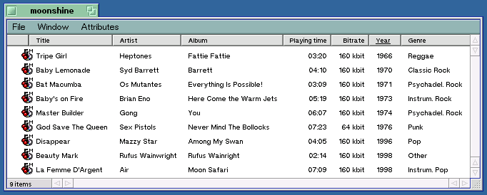

About RipEnc
"Ripless" MP3 encoding, ID3 tagging, and databasing
See Revision History for evolution.RipEnc works in conjunction with Be's Audio CD filesystem driver (cdda-fs) and cddblinkd daemon (for album and track name lookups), and the BeOS ports of command-line MP3 tools to let you encode selected tracks or an entire CD at once, without having to rip the tracks first. ID3 tags are written to filesystem attributes for display in the Tracker (as shown), and can be queried through the system's Find panel. When you create MP3s with RipEnc, you get database-like control of your MP3 collection.

MP3 files created with RipEnc, queryable attributes written to filesystem.
Tracker adjusted so that actual filenames are not displayed. Sorted by year.
This version of RipEnc includes an x86 binary of id3ren, to make installation easier. This is an open source application. If you would like access to the source, download the complete id3ren distribution.This version of RipEnc includes an x86 binary of cddblinkd, to make installation easier. This is an open source application provided by Be, Inc.. If you would like access to the source, download the complete cddblinkd distribution.
Origins
RipEnc was originally a bash shell script from the Linux world which I adapted to work in BeOS (ask me for sources to the old version if you want to see them). However, that version was needlessly complex and carried a lot of baggage we didn't need under BeOS.More importantly, the script wasn't taking advantage of some the coolest BeOS tools available -- Marco Nelissen's cdda-fs and cddblink tools (these now belong to Be, Inc.). By utilizing cdda-fs, this script benefits over the old version in two ways:
RipEnc was gutted and re-written from scratch to get rid of all the unnecessary complexity and streamline things. As a result, RipEnc is now easier to use, less likely to fail, is faster, and is BeOS-native. The only code here leftover from the original Linux version is the basic concept for the menuing system. The code is well commented; feel free to rip it apart and do whatever you like with it.
- It's faster, because there's no need to rip prior to encoding.
- Encoding doesn't take up gobs of temporary disk space because there's no need to store giant .WAV files separately, as other tools do.